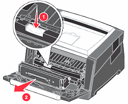
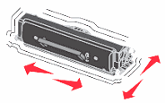
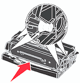
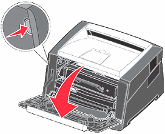
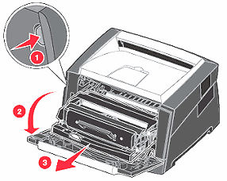
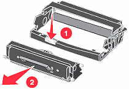
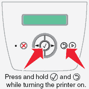
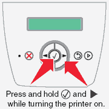
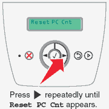
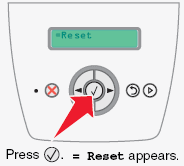

Replacing Printer Toner (Lexmark)
This procedure describes how to replace the toner for the Lexmark model E350 and E360 printers.
-
Replace the toner cartridge on the Lexmark printer.
-
Turn the printer off, and then press the
Release button on the left front side of the printer to open the front printer cover.

-
Press the
Release button at the base of the print cartridge assembly, and then grasp the handle on the cartridge and pull the cartridge up and out.

-
Firmly shake the cartridge in all directions to distribute the toner.
Shaking an old toner cartridge can sometimes allow the cartridge to print a few more pages.

-
Align the white rollers on the cartridge with the white arrows on the tracks in the printer, and press the cartridge firmly into place in the printer.
The cartridge clicks into place when installed correctly.

-
Turn the printer off, and then press the
Release button on the left front side of the printer to open the front printer cover.
-
Replace the printer drum on the Lexmark printer.
Caution: If you are shipping or returning the printer, remove the printer drum and toner before shipping.Caution: Protect the drum from damage and finger prints. Keep the drum in a dark bag or container. Exposure to light for an extended period of time can damage the drum.
-
Turn the printer off, and then press the
Release button on the left front side of the printer to open the front printer cover.

-
Grasp the toner cartridge handle, and pull the cartridge assembly up and out (without pressing the toner cartridge release button) to remove the cartridge assembly from the printer

-
Place the cartridge assembly on a flat surface, press the
Release button on toner cartridge, and then separate the toner cartridge from the printer drum.

- Install the toner cartridge into the drum assembly.
- Align the green arrows on the drum assembly with the green arrows on the printer, and push the drum assembly into the printer as far as the assembly will go.
- Close the front cover, and reset the photoconductor (drum) counter.
-
Turn the printer off, and then press the
Release button on the left front side of the printer to open the front printer cover.
-
Reset the photoconductor drum counter when needed or when replacing the drum.
Note: The printer may indicate that the drum is worn out based on page counts. If the print quality is acceptable, then reset the counter and continue using the drum.
- Power off the printer.
-
Display the
Config Menu screen.
- If this is an E350 Printer,
- Press and hold the Check-Mark and Back buttons at the same time, while turning the printer on
- Hold both buttons down, until the Performing Self Test or Busy message appears.
- Release the buttons to display the
CONFIG MENU
screen.

- If this is an E360 Printer,
- Press the Check-Mark and Right Arrow buttons at the same time, while turning the printer on
- Hold both buttons down, until the Performing Self Test or Busy message appears.
- Release the buttons to display the
CONFIG MENU
screen.

- If this is an E350 Printer,
-
Press the
> button until
Reset PC Cnt appears.

-
Press the
Check Mark button and
Reset
appears.

- Press the Check Mark button again to reset the count.